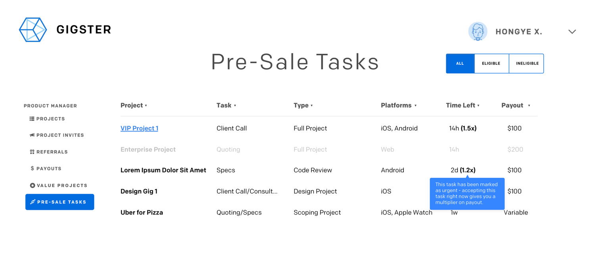

Gigster
Gigster is a smart software development service, combining top developers and designers with artificial intelligence.
Over Summer '16, I worked at Gigster doing some neat product stuff. Some of it is very internal - I'd be happy to talk more about these in person if you drop me a line!
I was extremely excited by the opportunity to apply a smorgasbord of different skills and make a lasting impact on a rapidly growing startup (listed as one of the best to join in the country!) - most of the work I did over the summer is still in use to date.
Gigster is backed by Andreessen Horowitz, Greylock Partners, SVAngel and Y Combinator (Summer '15).
It was listed as one of the best early stage startups to join in the Breakout List (end of 2015).
I was extremely excited by the opportunity to apply a smorgasbord of different skills and make a lasting impact on a rapidly growing startup (listed as one of the best to join in the country!) - most of the work I did over the summer is still in use to date.
Gigster is backed by Andreessen Horowitz, Greylock Partners, SVAngel and Y Combinator (Summer '15).
It was listed as one of the best early stage startups to join in the Breakout List (end of 2015).

Role
I came in as a fresh set of eyes to evaluate the internal processes of the company and how things were run - basically a product-minded problem solver.
To give you the short run-down, what Gigster does is source a team for software development (consisting of a product manager, a designer and one or more engineers) from a vetted pool of top-tier talent, using machine learning to 1. instantly provide a prospective client with a quote and 2. re-engineer existing codebases to cut cost to clients and make high-end engineering available to more people.
By the end of my internship, I'd directly contributed to generating $6 million in revenue, helped us secure a record high month in bookings, drove a significant increase in deal close rate, kept network talent happy, helped us reach a high in monthly customer satisfaction, and completely redefined how the first month of every project is run. Not bad for an intern!
I also made some cool visual assets like animations you see here, and helped trial some colour combinations as we moved to a flatter, monochrome logotype as well as gradient-based lockups.

Problems
The existing problems the team was cognizant of were long lead times from quote to product spec for development and nonstandardized processes. On top of that, after doing some contextual analysis and following a project from quote to spec to development, I discovered some disconnects along the way, with wildly varying early satisfaction scores sign-up/registration, team matching optimization and more.
1. Long lead times were caused by a lack of sufficient support staff that a company of Gigster's scale at the time didn't warrant. I figured out that projects were being quoted, and the middle step - specification, usually done by the sales engineer, often took weeks at a time especially if the project itself was technically complex and the sales team was out of their depth. A high volume of requests among a distributed team of 8 with varying technical backgrounds didn't exactly sound like the best combination.
"This project came in and the client accepted terms two weeks ago - we just need to write the spec for it and hand it off." Something I heard too often.
2. Nonstandardized processes for projects was a result of having a distributed network of product managers (PMs) and engineers who work with different frameworks and manage differently. Some might use XP (Extreme Programming) in their day jobs, PMs might use Agile or Lean, some might use waterfall. PMs write specifications for apps differently, some value personas, some don't; some embrace human-centered design and some care about architecture only. There had to be some way to standardize processes down the line, which with familiarity on the part of the PM, engineer and designer would lead to getting projects off the ground faster.
"Specs that come straight from the sales team usually lack a lot of detail, but I understand because they don't need to be as particular about the technicals."
A sign that something was amiss.
3. High variance in early satisfaction scores (we ask our client to rate upon delivery of the first milestone - every project is split into an arbitrary number of milestones, based on how much work the PM judges it to be) spelled bad signs. I scoured through a lot of Mixpanel and Looker data and it confirmed my suspicions - projects (or gigs, as we appropriately call them) with low first milestone satisfaction usually ended up giving us poor ratings through each milestone and delivery, if they even made them there. Low initial ratings almost always spelled cancellation midway, and for those that made it to finish they ended with poor ratings. Considering our key metric was customer joy, or percentage of gigs with a 9/10 rating or above at delivery, this definitely needed solving. I concluded (after surveying generally high rated PMs with very few low rated gigs to their name) that this was due to a lack of information parity upon delivery of the first milestone - we needed to make completely clear what was to be delivered in the first milestone and each subsequent milestone.
"Why wasn't this gig escalated? It got a 5/10 on the first milestone!"
Escalations are 'marked' gigs that require special attention from customer support.
4. Sign-up was incredibly sparse in terms of information provided - the emphasis on speed of getting a quote meant that we didn't collect much data at all (apart from name, budget, platform and contact details - not even a short description for the project!) This made writing initial specs for gigs tiresome, as sales engineers didn't even know what market certain projects were catering to. On top of this, it made finding a team difficult - we didn't know what sort of expertise we needed from a team (expertise with certain APIs? Programming conventions? Compliance?) until a few calls in, and even timezones proved difficult. Real clients would provide a Google Voice number and an e-mail address, and we'd accidentally match them with a team based predominantly in the US, while they assumed we knew they were based in Europe or Asia.
"They haven't scheduled a call yet because the client is 8 hours ahead of the PM."
Timezones are tricky.
Solutions
Finding solutions to these problems required a loooooot of contextual analysis, surveying and testing proofs of concept. The Slack network spanned 1000+ developers, PMs and designers, of which I interviewed no less than 200 and maintained a close testing/feedback relationship with 50. It also had me do a lot of the entire process, from quoting to writing specs to even owning a project and seeing it through - only then would I be able to reveal pain points that staff had to work around but had adapted to.
Early solution ideation in Evernote.
1. I surmised that the entire step of a 'pre-PM spec' was completely unnecessary. It was eating into sales engineer time and nobody wanted to write them (I volunteered to write a few to get a feel for it and the sales staff were overjoyed at even the suggestion of it), detracting from time they could put towards what they were really good at - getting deals in the pipeline! On the other end, after interviewing 200+ PMs, it was pretty clear that they were consistently unhappy with the amount of detail in them, instead electing to write their own set of specifications prior to beginning development. As a way to skip a bunch of friction and dissatisfaction, I proposed a platform by which PMs could compete to write specs for gigs in return for monetary reward and 'karma' (like Reddit), and the option to take on the gig themselves.
Some ideas on how I'd implement this platform.
2. My first thought was that this problem was extremely difficult - there was no way to cater to everybody.
"You have your way. I have my way. As for the right way, the correct way, and the only way, it does not exist." Nietzsche
It was clear that we'd have to make everybody do a little bit of adapting. I crash coursed popular ways for PMs to spec projects, delved deep into the archives for high rated specs, and reached out to our most respected PMs for their mental models. I picked up on common trends in structuring a high quality specification document, even doing 30+ of them myself and giving them to PMs and engineers to review, before creating the 'master document', or a modular spec that was versatile, and when filled out was unequivocally easily workable and didn't lack detail.
3. I was looking at a bunch of very successful gigs' milestones and it struck me that the first milestone always had some sort of implicit agreement between PM and client on what was to be built and when, just written in a document. In simpler terms, every good gig just started off with both parties being on the same page. I set to work on a similar template and internal document to be used for every single gig as a deliverable, almost like a statement of work.
4. In this case, it was a tough ask to try and optimize the signup and onboard process for maximum information while minimizing form fatigue and still getting the user a 'quote within 5 minutes', one of the original marketing sells. I proposed additions/remakes of the signup flow - most of my suggested changes made it through rigorous A/B testing and provide a good basis for PEs to work off today.
Part of a breakdown I did of the signup process.
Implementation
1. First, I started by doing it myself - I wrote a bunch of specs for real projects from the perspective of a sales engineer. I then corroborated this with product managers on the network; I ended up producing pretty good results and actionable specs, but took longer than a seasoned PM and could only handle so many per day.

The platform I ended up designing.
As proof of concept, I made a Slack channel wherein I took requests from sales engineers for PMs to help out with writing specs, and paid out money in exchange for the work done, as well as Karma (exactly like the Reddit system - just internet points!)
In the blink of an eye, it grew into a 200+ member community of high rated network PMs/devs/designers, and I suggested offering other work that needed to be done, like consultations on certain frameworks/APIs/software or client calls to flesh out a project in exchange for money and karma. To my surprise, the amount of demand was extremely, extremely high for these small projects - and people were messaging me that they didn't even want the money, only Karma in exchange for doing tasks!
Part of a spreadsheet I used to keep track of tasks - some projects are pretty out there!
Before I ended my internship, there was a 96% (rounded) fulfilment rate on requests - and the projects these requests were attached to were two times as likely to be sold by the sales engineers. In the end, I contributed to over $6 million in bookings/revenue, and at miniscule cost compared to margin.
When I was doing it manually, requests would follow this format.
The proof of concept had sufficed, and I set to designing a platform that would handle this with Slackbot integration. Details of the specification are a bit verbose, but I can provide a link to the Dropbox Paper document upon request. In essence, it'd be an automated platform for PMs and sales engineers to interface, posting, accepting and completing tasks. I performed a deep contextual analysis of this - for an incoming gig, I took up the reins of a sales engineer and the PM they were paired with, and designed with those journeys in mind.
Part of a spec I put together for the platform.
A task would look a little something like this.
The sales engineer's end of the platform.
The editing screen of a task for a sales engineer.
2. I collaborated with many PMs on the network and searched around for any personal templates they'd used to spec out gigs themselves. Some were particularly possessive (and for good reason!) I synthesized the commonalities into a standardized document. I tested this on high rated network PMs, getting their feedback on the document, and iterating, iterating and iterating. I took old gigs with particularly high ratings and looked at their specs as well. After a few passes and an OK from the sales and product teams, I decided to try it out on recently closed projects. I told PMs to fill out the document with a spec for their project, and pass it onto their respective engineers.
It was a great success - PMs found the document easy to follow, and engineers enjoyed the clarity and logical progression of it. It's now sitting in an internal Google Drive folder and baked into the private Github onboarding for all future gigs.
Some of what's covered in the spec doc.
3. Similar to above, it was also an effort to contact successful PMs with prior experience, to an ends of realizing that the first milestone really needed some sort of tangible deliverable (in this case, a report almost like a Statement of Work). Concurrent to the development of a universal spec template, I proposed that we could formalize its presentation into a report.
Snippet of the report front page.
In addition to this, what was considered owed at the end of the first milestone had to be made clear in the dialogue between the sales engineer and the client. We trialed this with a few live projects and saw good results, and this is still being used universally as a first milestone deliverable. It has since been changed to every permutation for each phase of development (scoping, design, development).
4. I started with a screen-by-screen breakdown of the sign-up and the funnel into a chat with the live team. Upon inspection and asking the sales staff, there were key parts of information being left out of the initial set of data gathering that took a lot of time to acquire through chat, e-mails or phone calls. Additional concerns were unearthed after talking to clients who had been through the process. Especially for startups that wanted Gigster to build out their core functionality, NDA adherence was underrepresented in information hierarchy (not mentioned at all). For clients, we already had a gauge of what kind of client they were technically, (internal classification was 'normal', 'laid-back' and 'technical'), but it didn't provide much explanation, especially when understanding of best practices comes with time, and mismatched expectations due to lack of technical expertise was a big hindrance to our overall customer satisfaction ratings.
New screen designed to broadly gauge product scope and frame feature discussion.
Screen with a question about user technicality.
These changes were rigorously A/B tested and didn't result in a drop in completion rate, so they are due to be implemented soon.
Feel free to ask me more about this summer experience! Drop me a line at the email below.